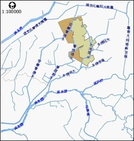

台南園區
位於鹽水溪中游流域，園區及附近地區主要排水系統包括大洲排水路、新市排水路及鹽水溪排水系統（安順寮排水線、看西排水線），其中大洲排水路及新市排水路於園區西南側匯入鹽水溪；而園區西側之安順寮排水線與看西排水線則匯流於鹽水溪排水系統。因此，台南園區主要分屬於大洲排水路、安順寮排水線及鹽水溪排水路上游支流之集水區。大致上台南園區北部為嘉南大圳善化支線，東面有嘉南大圳南幹支線，西面有曾文溪集水區、安順寮排水路、看西排水路，南面則有大洲排水路所環繞。

高雄園區
地勢平坦，整體地形北面較南面高，排水現況可分為東、西二區，西區之地表逕流經竹子港排水與下頭埤排水收集後，排至興達港內；東區之地表逕流則經北嶺墘支線與草溝支線收集後導排至土庫排水（潭底洋排水），請參照圖2.3-2說明。其中土庫排水為阿公店溪之主要支流，發源於大崗山；土庫排水所流經地區為阿公店溪流域中之低窪區，頻受洪災之害，計畫園區東南側之岡山鎮潭底洋低窪地區即常遭水患，目前高雄縣政府已完成土庫排水整治工程及嘉興抽水站整建工程。